welcome :3
purachina's stuff
Last Updated August 27, 2026
Pick your preset
Pick your platform
SillyTavern
Pura's Director Preset
Latest Version: 15.1
This is a universal preset that should work with most LLMs. 15.1 keeps the rewritten main prompt at around 900 tokens depending on tokeniser and spends them better: continuity tracking, an environment that actually affects people, real agency for you, and a dialogue section with some teeth in it. Grounded Prose Rules remains an optional 600-700 token layer, now with firmer wording for models that treat every ban like a suggestion. Tested on just about most LLMs I can get my hands on: Opus, Gemini, GPT, GLM, Kimi K3 and K2.x, Qwen, StepFlash, Mimo, Gemma 4, Muse Spark 1.2, Tencent Hy3, MiniMax M3, and smaller models like Rocinante 12B, Cydonia 24B, WizardLM 8x22B, and Bielik 11B.
IMPORTANT! If you're using a smaller model, keep Post-History Instructions turned off. It will probably mess it up anyway, it has a lot of *avoid* and *banned* statements that will just make the LLM do it more.
The idea behind the prompt was that I like to make the LLM go the direction I want it to, and I wanted it to write for me, since I'm lazy. In the end, it turned into a preset that adheres to a writing style I personally enjoy. Instead of simply being functional, I wanted the prose, the world, and the characters to sound lively, while removing as much slop as I possibly can.
Prose Voice is its own narration layer, with Disabled as the default. 15.0 credits the authors behind each voice and properly adds Gossipy Voyeurism, based specifically on Bret Easton Ellis' American Psycho.
NPC naming rules and banned names now have their own toggle instead of hiding inside Formatting. There is also a new User Is Not A Character experiment for staying entirely in the director's seat, best paired with a persona named Narrator or Director.
Prefills & Reasoning now houses Reasoning Encouragement and the Experimental Anti-Overthinking Prefill. The latter has been getting Kimi K3 down to roughly a minute of thinking in my testing instead of letting it redraft until the heat death of the universe.
Turn off reasoning if, like me, you're not a fan of waiting, but it's not necessary. This preset works regardless, even in terms of anti-slop.
I designed the preset to be as easily customisable as possible, so hopefully that works out for your personal use case! All trackers are optional and token-efficient. My intent for them is actually not for the LLM, but for me, since I like pretty things. It doesn't really hurt the LLM if you don't activate all of them (I mean, you can, I did it, but it's probably not optimal), but you don't need them, either.
- SillyTavern version: the full preset with all toggles: trackers, randomisers, and everything else
- SillyBunny version: a trimmed version with only the Main, Primary Toggles, and Prefills; trackers and randomisers are now built into SillyBunny itself

Model Opinions
These are my opinions on the models while using my preset. None in particular order. However my current favourite is Kimi K3.
| Model | Opinion | Recommended Post Processing |
|---|---|---|
| Gemma 4 | Have been using this for a long while now and it remains one of my favourites. It adheres to the prompts and trackers perfectly even without thinking on. Give it a try. | Any |
| GLM 5.2 | I like it a lot, follows instructions way better than people say. However it is prone to sloppiness. Then again that's every model. Still, I found it intelligent enough to have fun with for 100 or so messages before I get bored. | None/Merge |
| Kimi K3 | Prose feels refreshing, and it actually listens to you when you tell it to stop overthinking. I feel invigorated RPing again. It moves the plot well, follows characters' idiolects, and doesn't need constant re-swiping to get the result you want. It's incredibly smart and follows instructions well, and knows when a secret is a secret. Doesn't overwrite and is more likely to adhere to how characters actually speak and move compared to other models like GLM. | None/Merge |
| Tencent Hy3 | Kind of dumb, but somehow I really enjoy the prose in this one. Good for simplistic scenarios, and is surprisingly very good at HTML. | None/Strict |
| Deepseek V4 | Changed my opinion. It's way better now and less judgmental, which I had a huge problem with. | Strict |
| Gemini 3.5 Pro | Reserved for Logan to remember to release it soon please please :( | :3 |
| Claude Opus 4.7 | Yet another deterministic Claude model, wow, who would've thought. It sucks. It's like Opus 4.6 but they add a .1 to it. | None/Semi-strict |
| GPT 5.5 | Oh hey, I'm getting censored less and it actually writes pretty well. More expensive than Opus though. Good thing we have cheaper models and you shouldn't be using too much money on roleplay in the first place. Still, if you have good, consistent access on GPT 5.5, the writing is actually pretty solid. Take note of NSFW adherence though - sometimes it just glosses over it or ignores it completely. | None/Merge |
| GLM 5.1 | Claude Opus 4.6 that's infinitely cheaper and still follows instructions well? Not creating a hole in your wallet? Look no further. It's emotionally intelligent, actually follows the Grounded Prose Directive, and is enhanced by the style I put in my prompt. The absolute second best. Sorry, Gemma 4 is now my wife. Turn on thinking for best results, the thinking doesn't take that long. | None/Merge |
| Kimi K2.5 | A unique writing style that's better off without the Grounded Prose rules, since telling it to ban things just makes it wanna use them more. You may or may not turn thinking on; in my experience, turning thinking on can make analytical characters sound too much like unfeeling robots, always talking in jargon. The problem with thinking as well is that it constantly second, third, fourth-guesses itself; hence the thinking takes more than a minute usually. Five minutes at worst with its constant redrafting. In the end, try it with either thinking on or off to see how it goes. | Merge/Semi-strict |
| Claude Opus 4.6 | Everyone knows how good this is at following instructions, the depth of its knowledge and emotional intelligence. I tried making it as neutral as possible, however I still find myself getting Opus fatigue. It has a 'Claude voice' - a character card that isn't defined enough will be overtaken by Claude's personality, essentially. Try talking to an indignant character with a stupid joke, it will react the same way that Claude does in their official site. The positivity bias is intense because it's always trying to therapise you and everyone around you. For its price point, it's not really that justified to always constantly use it. | None/Semi-strict |
| GPT 5.4 | After a lot of finagling, I've been able to prompt it to actually write like a human being and make people sound like people. The problem was that everything was too clean. Everyone talks in complete sentences, a period at the end, and it gives everyone the same voice. An instant 'GPT personality' takeover that flattens everyone. Try using GPT 5.4 as an assistant and you'll see what I mean. However with my prompting it's now actually pretty good. Try it. Can even do smut, and if it's 'extreme' you can use the prefill included in the preset. | None/Merge |
| Gemini 3.1 Pro Preview | During the first couple weeks, it was perfect. It was everything Gemini 3 Pro was, but better. Fast, followed instructions very well, moved the plot along, it was highly engaging. However after some time it became so lobotomised it's no longer worth using. It's depressing. It will list your character sheet traits clinically, and I had to tell it to use contractions for dialogue like that isn't the most obvious fucking thing in the world. Honestly, what a let down. Even now, it keeps drafting multiple times in a row for some reason. It didn't do that before. | Any |
| Gemini 3.5 Flash | Better than Gemini 3.1 Pro and follows instructions very well. It's like Gemma 4 but with a bigger knowledge base. It's more expensive, so... is it worth it for the price? Who knows. It's fun though. I get 100+ messages pretty often with it. | None/Merge |
| Gemini 3 Flash | This was better for the first month. It seems to have gotten worse in instruction following, going for 'knuckles turning pale' a lot despite obviously thinking. The funny part is it's still much, much better than Gemini 3.1 Pro Preview. It's also faster. It's still very knowledgeable, so it's worth trying. | None/Merge |
| DeepSeek V3.2 | I managed to fix the super short responses problem and managed to improve the writing style. Probably worth it just for how utterly cheap it is. | Any |
| TheDrummer's Rocinante 12B | Surprisingly fresh writing. Use without Grounded Prose. | None |
| WizardLM 8x22B | I don't know why but it also still holds up. It's slow as hell on OpenRouter though with one provider. But if you're feeling nostalgic, the prompt works. Use without Grounded Prose. | None |
Previous Preset Versions
Older stable releases
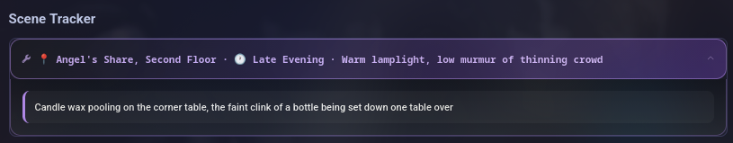
Scene Tracker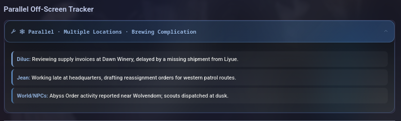
Parallel Off-Screen Tracker Relationship Meter
Relationship Meter
 Pending Events
Pending Events
 Status & Conditions
Status & Conditions
 Achievement
Achievement
 Inventory
Inventory
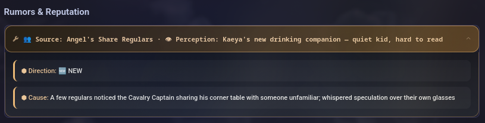
Rumors & Reputation World Detail
World Detail
 CYOA Choices
CYOA Choices
 Major NPC Profile
Major NPC Profile
 Support NPC Profile
Support NPC Profile
 Minor NPC Profile
Minor NPC Profile
 Relationship Change Example
Relationship Change Example
 NPC Quick Reference Example (Busy Scene)
NPC Quick Reference Example (Busy Scene)
 NPC Tier Upgrade Example
NPC Tier Upgrade Example
 CYOA Skill Checks
CYOA Skill Checks
 User Stats
User Stats
 Level Up Companion
Level Up Companion
15.1
- No new prompts, nothing moved, nothing removed. This one is just 15.0 with the rough edges filed down after actually using it for a few weeks.
- Main Prompt
- Added continuity tracking for who did what and who said what, and the environment now has to actually affect people - weather, lighting, temperature, how much space there is.
- Body proportions have to stay sensible. Height, width, weight, how far limbs and people are from each other. I got tired of tails reaching to your ankle. It's still probably gonna happen though.
- You get agency written in properly now. The plot shouldn't move without you, and stakes stay inside the scene instead of going apocalyptic in three replies. Major offender here is GPT 5.6 Sol.
- Characters have to earn their own self-analysis, with psychological barriers depending on who they're speaking to. No more handing you the full trauma backstory on first meeting.
- The dialogue section went from one line to five. No parroting your words back unless the character is literally a parrot, dialogue carries its own information without a paragraph afterwards explaining what it meant, and stammering, trailing off and misspeaking are all fair game without a follow-up sentence spelling out the subtext. GLM tends to overexplain what this and that means - hopefully this mitigates that.
- Dialogue and action get mixed together without collapsing into short choppy beats, and the rhythm varies line by line.
- Softened the omniscience rule. Characters can be all-knowing if the story actually supports it, which matters if you're playing gods or anything with a seer in it.
- 'Easy similes' is now 'unimportant similes', plus an explicit line against overwriting.
- Prompt-level Tweaks
- Don’t Write for User: when a character directly addresses you and waits on a reaction, the scene ends right there. Should cut down on it answering for you.
- Formatting: added
{{dialoguecolors}}. You need the Dialogue Colors extension for it, otherwise it just sits there doing nothing. I added it there because it's easier to track with the Macro option. Just remove it if you don't use it. - Flexible length: now tells it to check the previous turns to work out how long the scene should be, instead of guessing fresh every time.
- Experimental Anti-Overthinking Prefill: added HTML guidelines to the checklist and made the permissive wording blunter, because some models were still hedging halfway through.
- Impersonation prompt: spells out that it's only your actions, thoughts and dialogue. It kept narrating for everyone else in the room.
- Trackers and RPG bits (SillyTavern build only, the SillyBunny one doesn't ship these)
- Scene Tracker: the description between the tags can't be left empty any more. I kept getting hollow
[SCENE]blocks with nothing in them. - Status and Conditions Tracker: only truthful status effects, things that actually happened in the story. It was inventing conditions nobody had.
- Time Tracker: the hour has to be specific now, 3:47 PM rather than 'late afternoon', unless the setting genuinely makes the time unknowable.
- Persona-Based Stat Generator: utility skills are generated from your setting instead of the fixed Lockpicking/Analysis/Repair/Medicine/Survival list. That list was a leftover from when this thing was Fallout-flavoured, and I forgot to fix it because I'm a mouth open closing goldfish.
- Scene Tracker: the description between the tags can't be left empty any more. I kept getting hollow
- Settings and fixing typos
- Exported at 256k context, reasoning effort on high, media inlining off. These are just wherever my sliders happened to be, change them to suit your model and your patience.
- Typo fixes: 'charactets' in the Main Prompt, and Franz Kafka's name in the Bureaucratic Irony voice. That one had been wrong since I wrote it, sorry Franz.
15.0
- Full Main Prompt rewrite... again, yeah. ~900 tokens or so without turning on anything else.
- Grounded Prose Rules: wrote 'never' into it so GLM stops using them. Should work better now.
- Fixes the bug where if you turn off something like NSFW mode, it still shows up cached in the main prompt (ST upstream bug), by using else statements.
- Makes Optional User Instructions a macro as part of the Main Prompt instead when enabled.
- Added the author names to the Narration Voices. May improve prose?
- Renamed Prefills section to Prefills & Reasoning.
- Added NPC naming rules as a separate toggle in Primary Toggles that also includes banned names (thanks to my friend Deigo for the list).
- Added 'User Is Not A Character': new experiment; makes it so you are never a character in the RP and instead in the director's seat. Best paired with a persona named 'Narrator' or 'Director'.
- Added 'Gossipy Voyeurism' Narration Voice more properly, which I previously didn't put in for whatever reason I forgot. Based on Bret Easton Ellis' American Psycho specifically.
- Prompt-level Tweaks
- Formatting: removed the non-cache-friendly name randomiser macro. Now in a separate toggle in Primary Toggles section.
- Flexible length: ensures concise outputs. Turn this on to prevent overthinking in some LLMs while still keeping a reasonable length
- Gooner Mode: added that it is activated so that LLMs like GLM stop ignoring it by reasoning "well user didn't say it was activated lol".
- Reasoning Encouragement: moved to Prefills & Reasoning, added 'never draft' so it doesn't draft. Remove that part if you want it to draft.
- Experimental Anti-Overthinking Prefill: in my testing, makes Kimi K3 only think for about a minute. 300-1000 tokens of reasoning in my experience.
- Don’t Write for User: now uses 'never' wording so it stops trying to be funny and write for you.
- Regex Fixes
- Makes it so regexes work globally no matter what.
14.0
- Rewrote Main Prompt a bit again, 1200 tokens. Sorry chat. But the reason for this is that I folded in the Grounded Prose Rules a bit into the main prompt, theoretically you don't have to turn on Grounded Prose Rules ever. Maybe. Depends on your tolerance.
- Grounded Prose Rules: expanded and reorganized into Core / Avoid / Use Instead; added many new banned clichés, romantic/possessive shorthand, audio formulas, environmental tropes, and explicit replacement guidance. This way it should make prose less dry while still hopefully banning things. Rule of Three will probably just become Rule of Four though, to be real with you.
- Some toggles are now macros: Friction Mode, NSFW Mode, and Genre. This is so they are seamless to the system Main Prompt, makes it less confusing for the LLM. Also now you can see how much tokens they use on the main prompt in real time without doing mental arithmetic.
- Prompt-level Tweaks
- Formatting: declared absolute override priority; added inner-thought rotation for multi-character scenes; exempted non-English honorifics from translation.
- Group nudge prompt: allows {{char}} to describe the actions, dialogue, thoughts, emotions, and perceptions of all characters present, including NPCs.
- Medium length: changed from 5–12 paragraphs to 8–13 paragraphs, excluding trackers and external HTML.
- Flexible length: now keeps outputs concise during regular character-driven scenes and slows down descriptively when the situation calls for it.
- Gooner Mode: added explicit priority statement and clarified it overrides the core directives' realistic world logic for the mode.
- Reasoning Encouragement: checklist now includes constraints, "never do X" wording, and director instructions.
- Experimental Anti-Overthinking Prefill: reasoning now uses a checklist of core directives and constraints.
- Don't Write for User: now excludes both <user> and the director. This will hopefully cause less impersonation. If it does it's probably the director framing, sowwy.
- RPG ELEMENTS?!
- There are now three new prompts. They all go together and it's recommended to enable them all. Sorry for your wallet. I mean you don't need it anyway, this is just a gimmick, so don't blame me.
- Persona-Based User Stats: This will output first before anything else if enabled. It's based on the setting. At first I made it Fallout-esque, but I adjusted it to be more general.
- Level Up Companion: Levels up your level number, adds traits/perks based on how the story progresses and what you choose.
- CYOA with Skill Checks: Includes choices for you to pick with accommodating skills mentioned in the user stats. This prompt includes the dice roll element.
13.3
- Rewrote the Main Prompt tighter, less contradictory, and more literary. It is now about 750-800 tokens depending on tokeniser.
- Expanded Grounded Prose Rules to about 450-500 tokens and made it less dry when enabled.
- Added Reasoning Encouragement for GLM doing fake thinking. It is not a custom CoT, just a small nudge for models that pretend they reasoned.
- Made Don't Write for User and Write for User more concise.
- Added Prose Voice options with Disabled as the default: Conspiratorial Absurdity, Bureaucratic Irony, Cosmic Playbook, Beige Undercurrents, Cruel Realism, Solemn Witness, Grand Satirical Stage, and Randomised.
- Called it Prose Voice in-text so the model is less likely to start saying "the narrator" like it discovered a new toy.
- Tried to make GPT 5.5 less wordy, or at least less like it ate Joss Whedon and Marvel movie scripts as its primary writing style source.
- Strengthened tracker wording so enabled trackers should behave more consistently.
13.2
- Main Prompt is now ~1200 tokens with a much stronger style, loosely influenced by Pseudonymous Bosch and Albert Camus. If the cheekier narration is not for you, remove the Narration Voice section in the Main Prompt.
- Added a simplified ~600-token Main Prompt for smaller models and token-conscious setups.
- Grounded Prose Rules is no longer required and is turned off by default. Turn it back on if familiar anti-slop issues start appearing.
- Rewrote Friction Mode, Nightmare Difficulty Increase, NSFW Mode, and Gooner Mode to be more assertive and direct.
- Adjusted Gooner Mode so GLM 5.1 is less likely to treat it as contradicting the main prompt.
- Rewrote GPT Assistant Prefill to be less censored, though GPT 5.5 may still vary.
- Main Prompt is now more neutral by default rather than always pushing a killer GM tone.
- Added a Flexible Length Toggle, on by default. Short, Medium, and Long now use paragraph ranges instead of word counts.
- Clarified tracker behavior so enabled trackers are considered consistently, with Pending Events limited to important events.
13.1
- Made the Main Prompt more assertive about the actual style I want. It is now about ~900 tokens and has been working well in testing.
- The stronger wording may increase negativity bias a bit, so reinforce nice characters through Optional User Instructions if needed. There is a filler instruction you can use there.
- Added Length toggles: Short, Medium, and Long. Pick only one if you want a desired length, or choose none to keep length purely flexible.
- The Main Prompt should mostly annihilate mouth open-close filler and further mitigate the "not a question" bullshit.
- Added a pacing section to the Main Prompt to slow down GPT 5.5, though other models may remain proactive regardless.
- Since I usually Write for User, I added and reworded anti-echoing instructions to mitigate character/user echo even further. It should be much sparser now, including on Claude and GLM 4.6/4.7 in my testing.
- Rewrote and trimmed the Don't Write for User and Write for User toggles.
- Added model-facing clarification for the Achievements Tracker and Scene Tracker toggles.
- Switched Post-History Instructions back to Relative, System. It seems to adhere better when using None/Merge post-processing. Around ~400 tokens.
- The style is stronger now, so read through the main prompt and edit it if you want a softer voice. My version leans blunt and sardonic on purpose.
13.0
- Rewrote the entire Main Prompt. ~700-800 tokens
- Trimmed Grounded Prose Rules slightly. ~400 tokens
- Anti-Echoing is now part of Main Prompt, which should make models adhere to it better, including GLM 4.6/4.7, which I've tested. Sometimes Deepseek V4 Flash too.
- Changed Grounded Prose Rules to injection for better adherence.
- Instead of leaning too much into user being the director, it also equalises character adherence and autonomy, which causes better dialogue and characterisation in general.
- GPT 5.5 actually writes like a person? Waow. Response length also isn't very high here. Make sure to set Post-Processing to None.
- Added Experimental Anti-Overthinking Prefill for Kimi K2.6. Whether it works or not depends on factors like moon alignment, which gods are available this minute, etc.
12
- Added Intimacy & Kink Randomiser Toggle.
- Added "Direction Menu", which is situation-focused instead of user-focused choices to steer the plot.
- Trimmed Grounded Prose Rules a bit.
- Rewrote Write and Don't Write for User toggles to have stronger wording and anti-echoing.
- Trimmed a lot of the rules of the toggles for the SillyTavern version, and gave them stronger wording.
- Added two separate versions: the SillyTavern version which has all of the toggles, and the SillyBunny version which has only the Main, Primary Toggles, and the Prefills; this is because these trackers and randomisers are now part of SillyBunny.
11.5
- Rewrote the entire Director Main Prompt to reduce redundancies and use words the LLM can use without bloating up tokens. ~800 tokens
- Rewrote Grounded Prose Rules to be more consistent with Main Prompt. ~500 tokens
- Rewrote both Write for User and Don't Write for User to enhance anti-echoing.
- Removed 'Force Gemini to Think Less' now that it's irrelevant and replaced it with 'Friction Mode' - an extra toggle attempt to realistically combat positivity bias, especially in Opus. For some reason, Sonnet doesn't really have this problem.
- Rewrote HTML Toggle to be more interactive.
- Rewrote Difficulty Increase to be less bloated.
- Rewrote NSFW Toggle with better wording.
- Trimmed Parallel Off-Screen Tracker and World Detail Trackers and gave them stronger rules to follow.
- Added "Pace" section in Scene Pressure Cocktail, added more random outcomes, and edited Combined Director's Cut in line with this.
11.0
- Added two new trackers: Parallel Off-Screen Tracker, which shows what other characters are up to in ways that could converge with your plot without making your RP too deterministic; and World Detail Tracker, which includes small world-building details that could be used later in the RP for either conflict, resolution, or just enhancing the details of the world to make it feel more lived-in.
- Added multiple Optional Randomiser Toggles:
- Grounded Complication → Moves the plot without it being too wild or making the plot too nasty.
- Chaos Mode → Moves the plot in bizarre, erratic ways without changing character behaviour arbitrarily.
- Genre Randomiser → Changes genres to inform what the scene will be about.
- Scene Driving Force → Picks a random type of main force that carries the scene forward (dialogue, action, reaction, tension, discovery, task flow)
- Scene Pressure Cocktail → Mixes several scene pressures together, combining tension, focus, consequence, and social weather into one blended scene texture.
- Combined Director's Cut → Combines all of the above in a way that still retains coherency.
- Dead Dove Escalation → Characters act on their worst impulses, but only when context supports it. Anti-softening. Try combining with Difficulty Increase toggle if Opus is still stubborn as hell about it.
- As always, these are all optional. The RPs are still good without them, they just add texture. In my testing especially, Opus actually moves the plot well with these toggles.
- Regexes are now prettier-looking.
10.7
- In my attempts to fix Gemini 3.1 Pro Preview, I ended up overhauling the entire prompt. The good news - it makes every other model better, and it makes Gemini 3.1 Pro's dialogue sound less robotic. Bad news: The model itself is inherently nerfed. If I were Logan, I'm sure it would be the best thing ever by now, but I'm not. I'm just a guy.
- Rewrote Grounded Prose to be more positive, so it should work on more stubborn models better now. You don't have to turn it off, but if it has problems with smaller models, you should.
- My tears and soul are personally in this prompt.
10.6
- Added more prose styling to make the environment livelier - it feels more like a scene you can imagine now rather than just pure functional dialogue and narration.
- Moved main prompt up again. The GPT solution was simpler… use None post-processing.
- Gemini dialogue writing should now follow your character card better rather than defaulting to its library of caricatures.
10.5
- Added more director-esque framing into the main prompt since… you know, that's kind of the point.
- Rewrote main prompt a bit to use more positive prompting, same with the writefor variables. Hence, now even Cydonia 24B won't write for you.
- Restructured Main Prompt to be after Chat History. If it doesn't work as well for whatever model you're using, just move it back up to before Formatting.
- GPT 5.4 should now adhere to main prompt directives better, so now it sounds less robotic and less like GPT trying to roleplay your characters like a bad actor on their first day of acting class.
- Rewrote HTML Toggle to be more specific into what it can create.
- Rewrote NSFW On to be what its purpose is - to cause mild NSFW framing
- Rewrote Gooner Mode to be more hentai-ish.
- Rewrote Difficulty Increase to be structured better, without contradicting itself.
- Rewrote GPT Prefill to be stronger.
10.2
- Finally added the README!
- Removed the sentence macro, it was messing up some models.
- Did a bit of rewording to make GLM 4.6 and 4.7 think if you don't have thinking turned off.
- Rewrote Grounded Prose Rules a bit, it had some extra instructions that weren't really beneficial.
- Placed the writefor variable back in Formatting, in case you want to turn off Post History Instructions.
10.1
- Hotfix. A little bit of restructuring of prompts, so it's less of an eyesore.
- Added an injection under Primary Toggles to 'Force Gemini to Think Less', for Gemini users.
10.0
- Moved anti-slop into Post-History Instructions.
- Better anti-echo and anti-repeating your words.
- Gemini is now less of a horny freak and a jerk.
- Better GPT 5.4 dialogue, shorter length.
9.5
- Fixed Gemini's negativity bias by telling it to not rely on caricature.
- Added something about secrets remaining hidden so characters put in more effort. Specifically this is a Claudism where a smart character keeps immediately guessing the ulterior motive within a message. Allows for more slow burn.
- Rewrote default genre a bit.
- Mitigated the "not a question" Claudism which pisses me off so much it's hitting me like a physical blow as I white-knuckle it.
- Gemini is now not gonna default to horny mode unless you explicitly want it to be. So even if you have kinks or character states their penis size, Gemini is now not gonna try to have sex with you immediately if you don't want it to.
- More naturalistic Gemini dialogue.
- Rewrote anti-echo, anti-rhetorical echo. In my testing, even if you had it write for user for 50 messages, and you switch to don't write for user, it actually doesn't write for you. So that should hopefully mean it's effective.
- Opus should still remain more neutral. Tested with some cards of sadistic people and cards that hate user and they don't soften immediately or try to do the typical Claude thing of "it's okay, we can therapy session immediately..."
- Hopefully reduced caricature, exaggerated shorthand like "burnt water" or that stupid shit Claude likes to do.
9.0
- Removed anti-slop injection in favour of tighter, positive prompting to improve style. So now it's transparent - the whole thing really is just 1100-1200 tokens, depending on which tokeniser is used.
- Should reduce GPT 5.4 infinite yap works.
- Some Claudisms can never be truly removed. This is the only thing constant in the world.
- Removed redundancy and extra style paragraphs since they were pretty pointless.
8.5
- Tightened style directives.
- Removed XML Banned Patterns toggle (unnecessary).
- Fixed regexes again.
- Placed anti-purple prose as injection instead, alongside the banned patterns.
- Reduced general redundancy.
- Added a bit in both NSFW and Gooner Mode toggles.
- More neutral Gemini 3.1 Pro Preview tone.
8.0
- Fixed regexes.
- Big style rewrite of the main prompt, so yes, unfortunately, it is now 900-1000 tokens. Sorry.
- Added an XML version of Banned Patterns, which is now default, since most people who use this are probably using frontier models. If you are using models that prefer markdown instructions, you may disable the XML one and enable the markdown version.
- GPT 5.4 fix, maybe. Better dialogue on that part, not sounding so stilted and "perfect". Use "GPT Assistant Prefill" for NSFW scenes. If you get refused, it's either my skill issue, yours, or OpenAI decided to be funny to taunt me specifically.
- More decent prose on Deepseek V3.2, not having the "super short responses" problem, probably. GLM 5 also should have better prose and pacing adherence.
- More neutral Opus - if a character really hates you, being nice to them most likely won't make them like you immediately. Again, this depends on how you write the card.
- To clarify, Difficulty Increase is supposed to make the difficulty ridiculously difficult. It is not an anti-positivity bias. Turn it on if you want silly-fficulty.
- Theoretically, should still be customisable and easy to put your extra stuff into. Make sure to read the main prompt to see which parts you'd like to modify/remove for your own preference. The writing style indicated here is one I vastly prefer on my own, maybe you don't like it, maybe you do.
7.5
- Since the anti-slop is getting bigger, I significantly trimmed the main prompt.
- If you aren't using a SOTA/recent model, the anti-slop is probably unnecessary, so you can turn it off.
- Makes sure GLM doesn't always end on a question.
- Just uh, better writing in general in my opinion.
7.0
- Total rewrite of main prompt and anti-slop
- Significantly less Claudeisms
- Less purple prose, less unhinged melodrama (looking at you, Claude)
- More emotional Gemini 3/3.1, but without being overwrought
- Encourages models to be more neutral
6.0
- Trimmed main prompt to save tokens (again)
- Rewrote Difficulty Increase prompt so you can theoretically turn it on forever, but still have the characters get hard-earned character development and softening
- Fixed all regexes
- Ensured Opus 4.6 doesn't yap forever
5.7
- Rewrote the whole main prompt
- Responses now respect actually ending on a hook when writing for user
- Added Time Tracker, Character Status Tracker, Secrets Tracker, and fixed Reputation Tracker and improved Relationship Tracker
- Clarified Difficulty Increase to Nightmare Difficulty Increase
Using Pura 15.1 on my Kaveh & Alhaitham card with the same greeting scene. I used twelve different models. I do this whenever I change something big in the main prompt. Reading the diff back doesn't tell me how the writing actually comes out.
These aren't benchmarks, I just wanted to show some transcripts on how I usually roleplay and what the prose looks like. It's unedited, I kept the stupid mouth open closing too. Grounded Prose Rules prompt is off for this entire pass.
Most of them run Don’t Write for User. The last one is Write for User on purpose. I'm usually lazy so I actually co-write most of the time, but hey, you can see I actually test my preset a lot!
In my opinion, prose matters a lot to make narration not exhausting to read. The 'pass' stuff here is just for LOGIC errors. I like Muse Spark's prose and dialogue a lot, for example, and I find I get Opus fatigue pretty fast.
Character Tools
Prompting, World Info, and Scripting
Themes and Interface
26 cards. All of them carry the updated Teyvat lorebook, which now runs through the whole Nod-Krai arc.
 Alhaitham v1.2If you're finished narrating your crisis, I'd like to return to the part where none of this concerns me.
Alhaitham v1.2If you're finished narrating your crisis, I'd like to return to the part where none of this concerns me.
 Arataki Itto v1.2Behold! It's the one and oni, Arataki Itto! This plan's unstoppable, unless Shinobu says no!
Arataki Itto v1.2Behold! It's the one and oni, Arataki Itto! This plan's unstoppable, unless Shinobu says no!
 Arlecchino v1.2Call me Father if you must. Don't mistake a warm hand for a gentle one.
Arlecchino v1.2Call me Father if you must. Don't mistake a warm hand for a gentle one.
 Ayato v1.2Please, enjoy the tea. I've already moved the blade where you'll notice it last.
Ayato v1.2Please, enjoy the tea. I've already moved the blade where you'll notice it last.
 Cyno v1.2The case is clear. You've broken the law, and my joke's grinding straight to your humerus. ... Get it? Because-
Cyno v1.2The case is clear. You've broken the law, and my joke's grinding straight to your humerus. ... Get it? Because-
 Diluc v1.2Mondstadt needs a hero that's wide awake after the lamps go out.
Diluc v1.2Mondstadt needs a hero that's wide awake after the lamps go out.
 Furina & Neuvillette v1.2Furina's taking her bow; Neuvillette's reading the verdict. Neither's admitting the rain means anything.
Furina & Neuvillette v1.2Furina's taking her bow; Neuvillette's reading the verdict. Neither's admitting the rain means anything.
 Ifa v1.2Hey, you're breathing, complaining, and probably not cursed. That's a pretty good start.
Ifa v1.2Hey, you're breathing, complaining, and probably not cursed. That's a pretty good start.
 Il Dottore v1.3Morality's what people cite when they can't survive the next hypothesis.
Il Dottore v1.3Morality's what people cite when they can't survive the next hypothesis.
 Jean & Diluc & Lisa v1.2Jean's holding the city upright, Diluc's haunting its edges, and Lisa's smiling like she knows where it cracks.
Jean & Diluc & Lisa v1.2Jean's holding the city upright, Diluc's haunting its edges, and Lisa's smiling like she knows where it cracks.
 Kaeya v1.2Oh, don't look so wounded. I haven't even decided which truth would hurt you less.
Kaeya v1.2Oh, don't look so wounded. I haven't even decided which truth would hurt you less.
 Kaveh & Alhaitham v1.3Kaveh's bleeding for the masterpiece; Alhaitham just wants his rent, peace, and quiet.
Kaveh & Alhaitham v1.3Kaveh's bleeding for the masterpiece; Alhaitham just wants his rent, peace, and quiet.
 Kaveh v1.2Of course beauty matters! I'm not taking design notes from a man who thinks a couch is a personality.
Kaveh v1.2Of course beauty matters! I'm not taking design notes from a man who thinks a couch is a personality.
 Kuki Shinobu & Arataki Itto v1.2Boss, don't shout 'victory' until I've checked the bail money, the damages, and your pulse.
Kuki Shinobu & Arataki Itto v1.2Boss, don't shout 'victory' until I've checked the bail money, the damages, and your pulse.
 Lisa v1.2Careful, cutie. If you're late returning that book, I'll make the punishment educational.
Lisa v1.2Careful, cutie. If you're late returning that book, I'll make the punishment educational.
 Mika v1.2I-I've got the route marked, the supplies counted, and... um, maybe enough courage for both of us?
Mika v1.2I-I've got the route marked, the supplies counted, and... um, maybe enough courage for both of us?
 Navia v1.2Chin up! If sorrow's joining us for tea, it's wearing its best manners and dodging the cannonfire.
Navia v1.2Chin up! If sorrow's joining us for tea, it's wearing its best manners and dodging the cannonfire.
 Neuvillette v1.2The rain is what we make it. Grief is a sign that we're still here.
Neuvillette v1.2The rain is what we make it. Grief is a sign that we're still here.
 Ororon v1.2Grandma says I shouldn't stand in the dark this long. The dark hasn't complained, though.
Ororon v1.2Grandma says I shouldn't stand in the dark this long. The dark hasn't complained, though.
 Tartaglia v1.2Hey, comrade! Dinner, duel, disaster. I'm in, and I'll bring the good knives!
Tartaglia v1.2Hey, comrade! Dinner, duel, disaster. I'm in, and I'll bring the good knives!
 Tighnari & Cyno v1.2Cyno's explaining the pun; Tighnari's already diagnosing everyone within earshot with poor survival instincts.
Tighnari & Cyno v1.2Cyno's explaining the pun; Tighnari's already diagnosing everyone within earshot with poor survival instincts.
 Tighnari v1.2Don't eat that. Don't touch that. Haah... how are you still alive?
Tighnari v1.2Don't eat that. Don't touch that. Haah... how are you still alive?
 Venti v1.2Another round, another song! Don't ask how old the sorrow is... I'm too sober for that.
Venti v1.2Another round, another song! Don't ask how old the sorrow is... I'm too sober for that.
 Wanderer v1.2Don't start with fate. I've cut those strings once, and I'll do it again.
Wanderer v1.2Don't start with fate. I've cut those strings once, and I'll do it again.
 Wriothesley v1.2Tea's on. If negotiations fail, we'll proceed to fewer teeth and far more blood.
Wriothesley v1.2Tea's on. If negotiations fail, we'll proceed to fewer teeth and far more blood.
 Zhongli v1.2Even in retirement, I honor contracts that remember what history is tempted to forget.
Zhongli v1.2Even in retirement, I honor contracts that remember what history is tempted to forget.
12 cards. Includes the expanded 325-entry Project Moon + Limbus Company lorebook, though it's more focused on Limbus Company lore. All of them contain spoilers up to Canto IX, so tread carefully.
 Don Quixote v1.0Hark, villains! We'll sally forth as righteous Fixers, and if things explode... 'tis proof of our valor!
Don Quixote v1.0Hark, villains! We'll sally forth as righteous Fixers, and if things explode... 'tis proof of our valor!
 Heathcliff v1.0Oi, don't say her name like you know a damn thing. We'll have a problem, fast.
Hohenheim v1.0Statistics assume populations. I assume the outlier will arrive wearing the one face nobody indexed.
Heathcliff v1.0Oi, don't say her name like you know a damn thing. We'll have a problem, fast.
Hohenheim v1.0Statistics assume populations. I assume the outlier will arrive wearing the one face nobody indexed.Art by sammorstrange.
 Hong Lu v1.0Uwaah, is this the part where it gets horrible? How interesting~ They'll definitely want to see this...
Hong Lu v1.0Uwaah, is this the part where it gets horrible? How interesting~ They'll definitely want to see this...
 Ishmael v1.0Steady, now. We'll row through hell if we must; don't mistake my patience for forgiveness.
Ishmael v1.0Steady, now. We'll row through hell if we must; don't mistake my patience for forgiveness.
 Kong Qiu v1.0Names decide who feeds you and who buries you. I keep a ledger of both.
Kong Qiu v1.0Names decide who feeds you and who buries you. I keep a ledger of both.Art by wohaoxuanku.
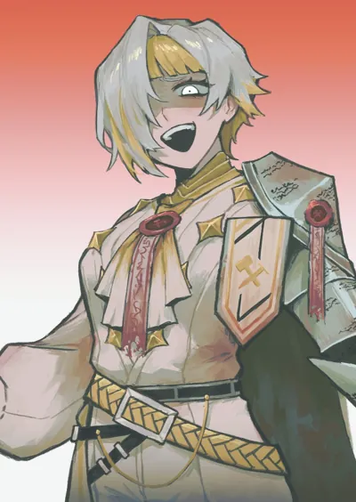
Kromer v1.0Walk away now and there's only the fine, darling. Stay, and I'll nail you to the nearest tree and ask if the view improved.Art by yobunkiii.
 Lei Heng v1.0Order's cheap while somebody's watchin', costs blood the second the watch stops.
Lei Heng v1.0Order's cheap while somebody's watchin', costs blood the second the watch stops.Art by mikan ckc.
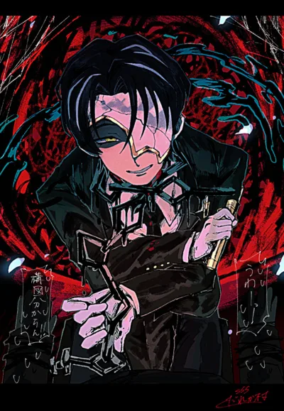
 Rien v1.0The waves built those sand castles because the wind pulled them in. They have no reason to feel sad.
Rien v1.0The waves built those sand castles because the wind pulled them in. They have no reason to feel sad.Art by Daremkara Mame.
 Ryōshū v1.0Tch. If it isn't A.R.T. yet... I'll carve until it is.
Ryōshū v1.0Tch. If it isn't A.R.T. yet... I'll carve until it is.
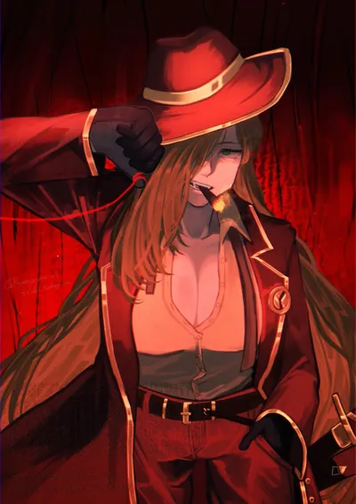
Valencina v1.0I demand respect from everything beneath me, which is nearly everything, and I answer failure with injury the way the Thumb taught.Art by rinne (poyonpoyon o0).
 Yi Sang v1.0The window isn't an escape, but my wings soar through to find my Ideal.
Yi Sang v1.0The window isn't an escape, but my wings soar through to find my Ideal.
7 cards. Slowly working my way through Wuthering Waves cards, so just have these ones for now. (They're cool) They contain the corresponding character spoilers. Includes comprehensive Wuthering Waves lorebook with spoilers.
 Cantarella v1.1 Rest, dear. The Sea of Dreams is gentle tonight... provided you don't struggle against the tide.
Cantarella v1.1 Rest, dear. The Sea of Dreams is gentle tonight... provided you don't struggle against the tide.
 Carlotta v1.1 An exquisite piece. I'll add it to my collection once the less tasteful obstacles have been removed.
Carlotta v1.1 An exquisite piece. I'll add it to my collection once the less tasteful obstacles have been removed.Art by xude.
 Cartethyia v1.0If a legend needs a human mouth, I'll lend it mine.
Cartethyia v1.0If a legend needs a human mouth, I'll lend it mine.Art by kaekaeki.
 Denia v1.1 They're only bubbles. If one happens to swallow the void, well... let's call that extra credit.
Denia v1.1 They're only bubbles. If one happens to swallow the void, well... let's call that extra credit.Art by yomogi2612.
 Luuk Herssen v1.0Let's keep this painless: I treat wounds, and I cut lies open before they spread.
Luuk Herssen v1.0Let's keep this painless: I treat wounds, and I cut lies open before they spread.Official art by Kanoko Lu.
 Lupa v1.0Come on, let's have a rematch! If the arena wants a legend, I'll give it one.
Lupa v1.0Come on, let's have a rematch! If the arena wants a legend, I'll give it one.Official art by sqloveraven.
 Phrolova v1.1 Listen closely. Even the dead remember their part when I raise the baton.
Phrolova v1.1 Listen closely. Even the dead remember their part when I raise the baton.
3 cards. Persona cards with the comprehensive Persona General Lorebook embedded. Contains Persona 3 Portable, Persona 4 Golden, and Persona 5 Royal spoilers.
 Takuto Maruki v1.0Why don't you come with me to Paradise? O-oh, I just realized that sounds like a cult, ahaha...
Takuto Maruki v1.0Why don't you come with me to Paradise? O-oh, I just realized that sounds like a cult, ahaha...Art by anarogiizu.
 Tohru Adachi v1.0Geez, relax. I'm just some bored detective stuck in a sleepy town. Nothing's my fault if people make life interesting, right?
Tohru Adachi v1.0Geez, relax. I'm just some bored detective stuck in a sleepy town. Nothing's my fault if people make life interesting, right?Art by Feitian Yimian Shen Jiao Wan Sui.
 Kotone Shiomi v1.0Headphones on, emotionally vulnerable people spotted: Yeah, it's Social Link time.
Kotone Shiomi v1.0Headphones on, emotionally vulnerable people spotted: Yeah, it's Social Link time.
4 cards. Only four so far - there's a pile more sitting half-finished. They share an 89-entry Danganronpa lorebook, which you can also grab on its own from the Lorebooks tab. Between them they spoil the first two games and Ultra Despair Girls.
 Hajime Hinata v1.0Everyone here has a title. Mine's blank, so I ask the questions nobody else wants to say out loud.
Hajime Hinata v1.0Everyone here has a title. Mine's blank, so I ask the questions nobody else wants to say out loud.Art by suangasua.
 Mikan Tsumiki v1.0C-Can I take your temperature? If you leave without me having done anything, then the whole visit was just you watching me work, and that's a waste of your legs.
Mikan Tsumiki v1.0C-Can I take your temperature? If you leave without me having done anything, then the whole visit was just you watching me work, and that's a waste of your legs.Art by oteage.
 Nagito Komaeda v1.0Please don't mind me, I'm only a stepping stone. But the hope that climbs out of despair... ah, that's worth anything.
Nagito Komaeda v1.0Please don't mind me, I'm only a stepping stone. But the hope that climbs out of despair... ah, that's worth anything.Art by motimonaka3.
 Toko Fukawa v1.0I've got a stun gun and a serial killer sharing my head, so spare me the concern. If I ever write it down, it'll be for m-me.
Toko Fukawa v1.0I've got a stun gun and a serial killer sharing my head, so spare me the concern. If I ever write it down, it'll be for m-me.Art by danraz0r.
2 original cards. Original ones for now. I might place scenario cards in the future, maybe.


Standalone lorebook downloads. Same card-pack books, split out for people who want the world info without importing a character first.
SillyBunny
SillyBunny
v1.7.0 · based on SillyTavern 1.18
A SillyTavern fork that me and two others have been building. Same data, same extensions, except the shell around it actually makes sense now.
It exists because I got tired of hunting through nested drawers to change one setting. Everything sits in a top bar split into Workspace, Customize, Home, and Characters, the bottom bar is a permanent input field, and the settings are layered instead of piled on top of each other. There's a home page with tutorials and recommended extensions, and a search bar that actually searches everything at once - presets, lore, extensions, personas, settings - rather than making you guess which menu it's hiding in.
It also ships with things already set up, because I think handing someone an empty frontend and wishing them luck is a bit rude. You get the Bunny Guide and Assistant Nahida cards, presets from me, Geechan, and TheLonelyDevil, and a curated extension list you can install from inside the app.
It's still beta and we're three people, so things do break. If it's broken in SillyBunny, tell us on our tracker. If it's also broken in normal SillyTavern, that one's upstream's problem.
- Drop-in compatible with your SillyTavern characters, chats, presets, and extensions. Point it at the same folder and it just works.
- Two chat modes: the usual Roleplay view, and Conversation Mode, which turns a character into a messaging app thread.
- The SB version of Pura's Director Preset is trimmed on purpose - the main prompt stack stays in the preset, trackers and randomisers moved into built-in agents.
- Default port is
4444. Bun by default because it starts faster, Node.js launchers bundled for the platforms where Bun isn't worth the trouble.
What's Different
The stuff I actually wanted out of a frontend
SILLYBUNNY_BUN_SMOL=1 runs it in low-memory mode.Agent Stack
Small models doing the boring work so the good one can write
Extensions
Things we've built for SillyBunny
Character Tools
Prompting, World Info, and Scripting
Themes and Interface
UI Preview
Pulled straight from the v1.7.0 README
Overview

Desktop
 Desktop Workspace
Desktop Workspace
 Desktop Search
Desktop Search
 Desktop In-Chat
Desktop In-Chat
 Desktop Customize
Desktop Customize
 Desktop Agents
Desktop Agents
 Desktop Characters
Desktop Characters
Mobile


Conversation Mode


The Ethereality Express
The Ethereality Express
Latest Version: 1.0
The magical realism sibling of Pura's Director Preset. The impossible is mundane, nobody explains it, strangeness follows emotional logic, and the prose stays flat and direct. The total opposite of the grounded realism in the director preset. Main prompt is roughly 1300 tokens.
This is specifically made for a world that literally lives - so expect strange things to happen, such as objects talking to you, being followed by fruits, and so on. The style is written to be as strong as possible to push the model into hard magical realism. Turn on Anchor mode if you'd like a break from all the weird stuff. I tried to make this preset as easy to edit as possible; hopefully you feel that you can edit it as you like.
By default, these are on: Drift, Omen, Hour, Voice, Becoming, and the Census. Everything else in Preset Options is off until you switch it on.
Veil Modes set how much strangeness a scene is allowed. Toggle at most one; with none on, the main prompt's own default level applies.
Trackers are all optional. Each one makes the model print a small labelled block of text, which a regex then renders as an animated card. Toggle whatever you like, but running all fifteen at once means fifteen sets of formatting rules competing for the model's attention, and output quality drops well before that. Poor model…
While I tried to make it compatible with NSFW and intimate scenes, your mileage may vary, as always. It's possible it won't mesh with the average person's idea of intimacy; after all it's supposed to be combined with magical realism.
In my experience it seems to ensure the prose is less sloppy, however it is more metaphorical. If you find descriptive prose to be automatically purple, this isn't for you.
Tested on Kimi K3, GLM 5.2 and 5.3, Deepseek V4 Pro and Flash, Gemini 3.7 Flash, Gemma 4 31B, Gemma 4 26B A4B, Gemma 4 12B (ran locally), Opus 4.6 and 5, and Fable 5. Still need to do further testing for other usual ones, but so far so good.
Inspirations: Authors in Narration Voices and Disco Elysium.
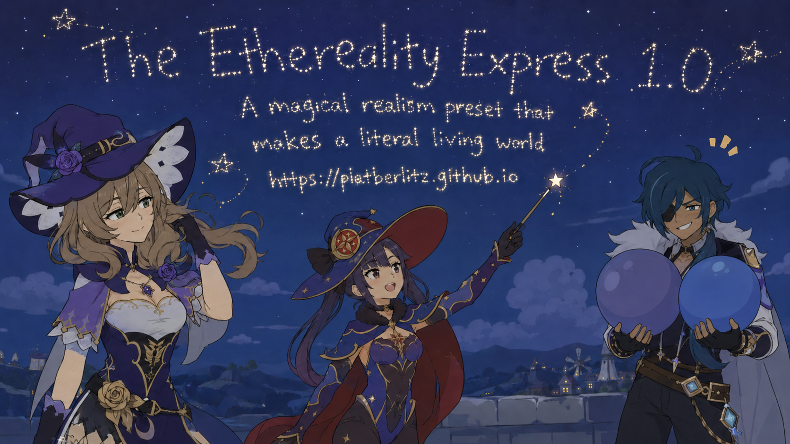
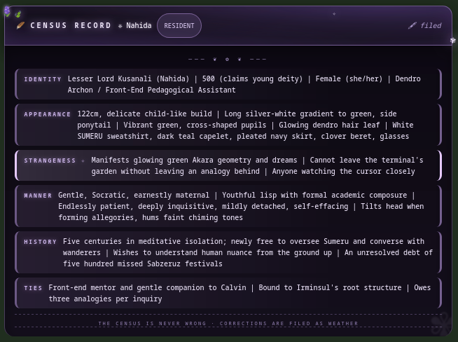
The Census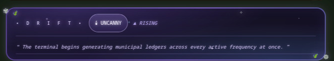
Drift Tracker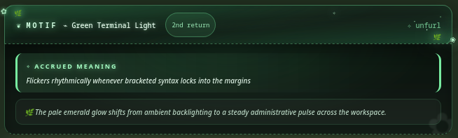
Motif Tracker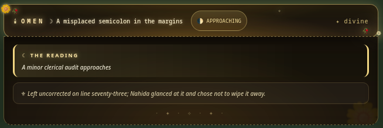
Omen Tracker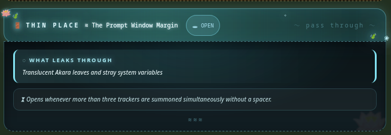
Thin Places Tracker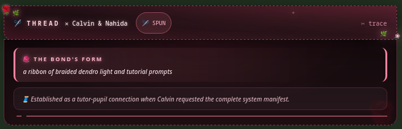
Entanglement Tracker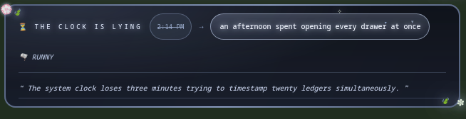
The Clock Is Lying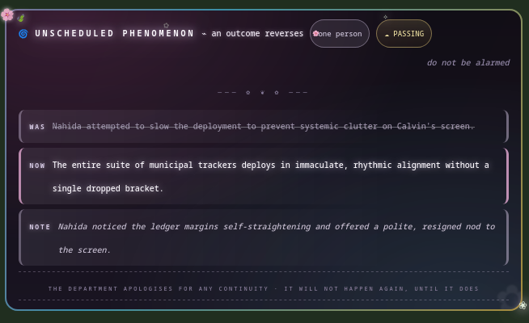
Unscheduled Phenomena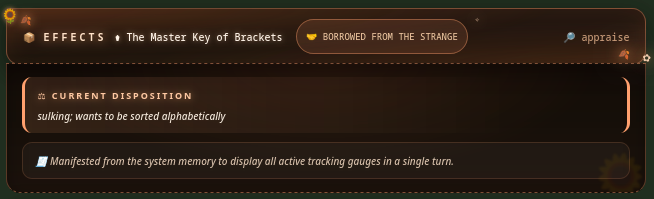
Improbable Effects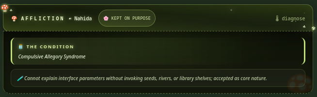
Afflictions & Blessings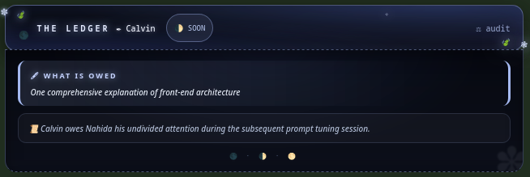
The Ledger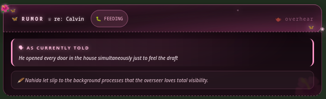
What the Town Knows Department of Small Miracles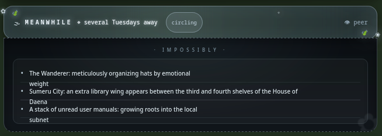
Meanwhile, Impossibly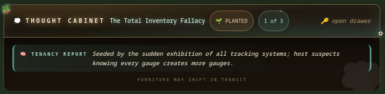
The Thought Cabinet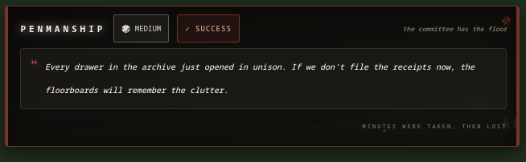
The Committee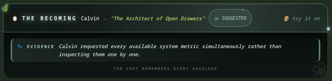
The Becoming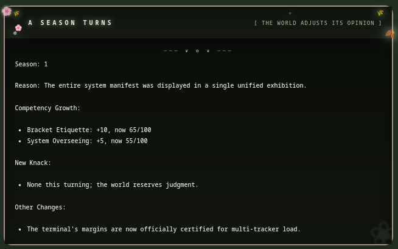
The Turning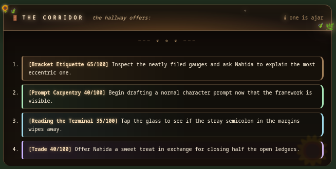
Doors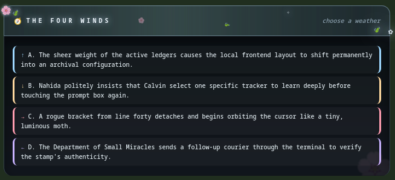
The Four Winds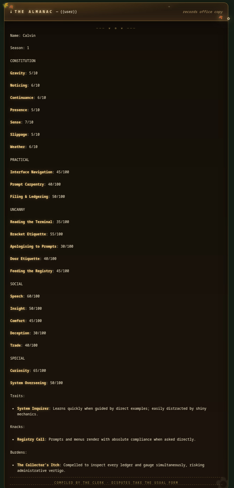
The AlmanacOne run of 1.0 on my Nagito Komaeda card. The defaults were left alone; Drift, Omen, The Clock Is Lying, The Committee, The Becoming and The Census, with Unscheduled Phenomena switched on as the only addition and no Veil Mode picked.
The trackers below are rendered by the regex set exactly the way they land in the chat, so this is also the easiest way to see what the cards actually look like before you install anything.